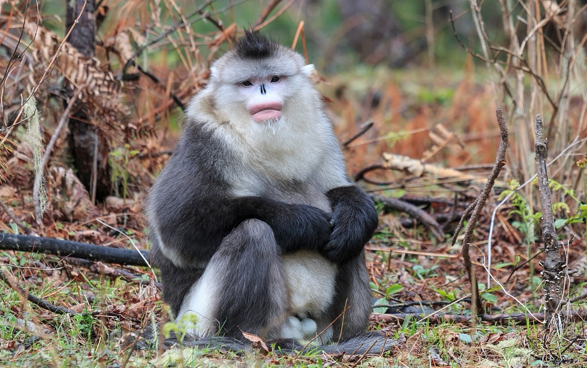

📇
基础名片
Basic Info
🐒 滇金丝猴
学名 Rhinopithecus bieti，别名黑金丝猴、云南仰鼻猴
中国特有灵长类，猴科仰鼻猴属；是世界上海拔分布最高的非人灵长类。
保护级别：国家一级重点保护动物，IUCN 评级濒危（EN）
学名 Rhinopithecus bieti，别名黑金丝猴、云南仰鼻猴
中国特有灵长类，猴科仰鼻猴属；是世界上海拔分布最高的非人灵长类。
保护级别：国家一级重点保护动物，IUCN 评级濒危（EN）
✨
外形特征
Morphology
外形特征
成年雄猴体长约83cm、体重15–17kg；雌猴略小，体重9–12kg，尾长52–75cm；
体背灰黑色，上臂内侧、颈侧、臀部为鲜明白色；头顶有细长黑色冠状毛；
面部青灰/肉粉色，红唇突出，鼻端上翘（仰鼻），辨识度极高
成年雄猴体长约83cm、体重15–17kg；雌猴略小，体重9–12kg，尾长52–75cm；
体背灰黑色，上臂内侧、颈侧、臀部为鲜明白色；头顶有细长黑色冠状毛；
面部青灰/肉粉色，红唇突出，鼻端上翘（仰鼻），辨识度极高
🌍
分布与栖息
Habitat
分布与栖息
仅分布于云南西北部+西藏东南部，澜沧江与金沙江之间的云岭山脉狭小区域；
栖息海拔2700–4500m的高山暗针叶林（冷杉、云杉为主），随季节垂直迁移，不做长距离水平迁徙。
仅分布于云南西北部+西藏东南部，澜沧江与金沙江之间的云岭山脉狭小区域；
栖息海拔2700–4500m的高山暗针叶林（冷杉、云杉为主），随季节垂直迁移，不做长距离水平迁徙。
🍃
习性与繁殖
habits
习性与繁殖
食性：主食松萝（树挂），辅以树叶、竹笋、浆果；偶尔取食小型无脊椎动物补充蛋白;
社群：群居，以一夫多妻的家庭群为单位，也有全雄“光棍群”；群体规模50–500只不等;
繁殖：雌性4–5年性成熟，孕期约7个月；每年3–4月集中产仔，每胎1仔，繁殖率低（约3年1胎);
食性：主食松萝（树挂），辅以树叶、竹笋、浆果；偶尔取食小型无脊椎动物补充蛋白;
社群：群居，以一夫多妻的家庭群为单位，也有全雄“光棍群”；群体规模50–500只不等;
繁殖：雌性4–5年性成熟，孕期约7个月；每年3–4月集中产仔，每胎1仔，繁殖率低（约3年1胎);
🛡️
保护现状与措施
measure
保护现状与措施
数量：从1990年代约1000–1500只，增至2021年23个种群、3845只
核心保护：建立白马雪山、云龙天池等多个国家级/省级保护区； 严禁盗猎、盗伐；推行社区共管、生态旅游替代生计；红外相机长期监测
威胁：栖息地破碎、气候变化、人猴冲突仍存在
数量：从1990年代约1000–1500只，增至2021年23个种群、3845只
核心保护：建立白马雪山、云龙天池等多个国家级/省级保护区； 严禁盗猎、盗伐；推行社区共管、生态旅游替代生计；红外相机长期监测
威胁：栖息地破碎、气候变化、人猴冲突仍存在

滇金丝猴种群数量变化监测
滇金丝猴种群数量增长趋势